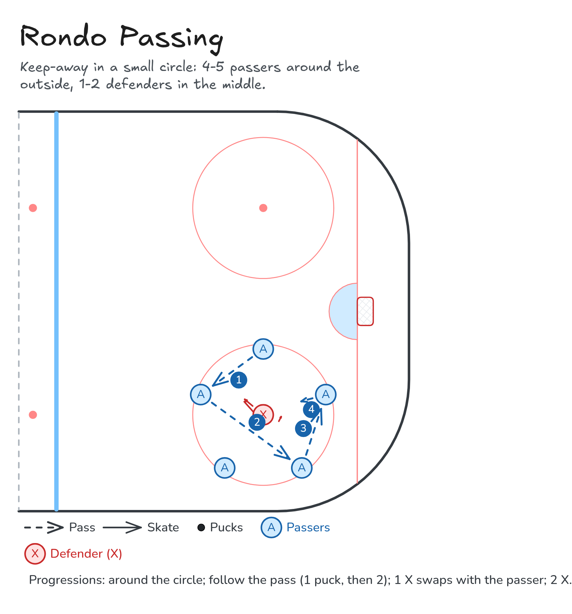

Rondo Passing Progressions
Groups of 5-7 in a small circle: passers keep the puck away from a defender in the middle. Steal it and you swap.
- Passing
- Small-area game
Watch
Diagram

Coaching points
- Head up: know where your next pass is going before the puck arrives.
- Quick, flat passes. Move the puck before the defender closes.
- Show a target with your stick and give the passer an option.
- Defender: take away the middle pass with your stick and body.
- Count passes out loud: 5+ in a row scores a point.
How it runs
- Groups of 5-7. 4-5 passers around a small circle (20x20 ft, or a faceoff circle) and 1-2 defenders in the middle.
- Progression 1: pass around the circle with no defender.
- Progression 2: one puck, follow your pass. Then two pucks, follow your pass.
- Progression 3: one puck and one defender. If the defender intercepts, they swap with the passer.
- Progression 4: two defenders, one puck. Rotate defenders every 30-60 seconds; 5+ passes in a row scores a point.